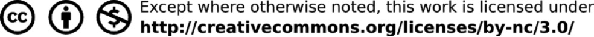

TEGNOLOGIE
Graad 8
Boek 1
KABV
Leerderboek
Ontwikkel en gefinansier as ’n voortgesette projek van die Sasol Inzalo Stigting, in samewerking met die Ukuqonda Instituut.
Gepubliseer deur The Ukuqonda Institute
Nealestraat 9, Rietondale, 0084
Geregistreer as Titel 21-maatskappy, registrasienommer 2006/026363/08
Openbare Bevoordelingsorganisasie, PBO-no. 930035134
Webwerf: http://www.ukuqonda.org.za
Eerste publikasie in 2013
© 2013. Kopiereg op die werk is in die uitgewer gevestig. Kopiereg op die teks is gevestig in die bydraers.
ISBN: 978-1-920705-14-5
Hierdie boek is ontwikkel in samewerking met die Departement van Basiese Onderwys van Suid-Afrika, met finansiering van die Sasol Inzalo-stigting.
Medewerkers:
Graham Barlow, Louis Botha, John de Klerk, Jacqui Greenop, Chris Human, Piet Human,
Riekie Human, Xenia Kyriacou, Morne Labuschagne, John Laurie, Ezekiel Makwana, Rallai Maleka, Mafahle Mashegoana, Themba Mavuso, Peter Middleton, Lebogang Modisakwena,
Peter Moodie, Neil Murtough, Sarah Niss, Humphrey Nkgogo, Phillip Radingoane, Jan Randewijk, Margot Roebert, Marcus Taba, Yvonne Thiebaut, Cecile Turley, Louis van Aswegen,
Karen van Niekerk, Elene van Sandwyk, Pieter van der Westhuizen
Illustrasies en grafika:
Astrid Blumer (Happy Artworks Studio), Ian Greenop, Chris Human, Piet Human, Peter Middleton, Peter Moodie, Melany Pietersen (Happy Artworks Studio), Theo Sandrock, Lisa Steyn Illustration, Heine van As (Happy Artworks Studio), Leonora van Staden, Geoff Walton
Voorbladillustrasie: Leonora van Staden
Foto’s:
Lenni de Koker, Ian Greenop, Chris Human, Tessa Olivier, Elsa Retief (Gallery Productions)
Teksontwerp: Mike Schramm
Uitleg en setwerk: Lebone Publishing Services
’n Spesiale woord van dank aan die volgende instansies en individue vir die vrye uitruil van idees, en die vrye toegang tot foto’s:
Cape Peninsula Fire Protection Association, Beate Hölscher (Suid-Afrikaanse Omgewingsnavorsingsnetwerk), The Informal Settlement Research Group (http://www.ishackliving.co.za), die Nasionale Seereddingsinstituut
Ons bedank ook die individue en instansies wat foto's in die publieke domein geplaas het op www.commons.wikimedia.org, en wat geen erkenning vereis nie.
Gedruk deur XXXXX [drukker se naam en adres]
KOPIEREGKENNISGEWING
Jou reg om hierdie boek wetlik te kopieer
Hierdie boek word gepubliseer onder lisensiëring van ’n Creative Commons Attribution-NonCommercial 3.0 Unported-lisensie (CC BY-NC).
Jy mag en word aangemoedig om hierdie boek vrylik te kopieer. Jy kan dit soveel keer as wat jy wil fotostateer, uitdruk en versprei.
Jy kan dit aflaai op enige elektroniese toestel, dit per epos versprei en op jou webblad laai. Jy mag ook die teks en illustrasies aanpas, op voorwaarde dat jy aan die kopiereghouers erkenning gee (“erken die oorspronklike werk”).
Beperkings: Jy mag nie kopieë van hierdie boek maak vir die doel van winsbejag nie. Dit geld vir gedrukte, elektroniese en webbladgebaseerde kopieë hierdie boek, of enige deel van hierdie boek.
Vir meer inligting oor lisensiëring by die Creative Commons Attribution-NonCommercial 3.0 Unported (CC BY-NC 3.0), besoek
http://creativecommons.org/licenses/by-nc/3.0/

Inhoudsopgawe
Kwartaal 1
Hoofstuk 1:
Dakke en kragmaste 1
Hoofstuk 2:
Geboue en brûe 17
Hoofstuk 3:
Plat en isometriese werkstekeninge 33
Hoofstuk 4:
Perspektieftekening 45
Hoofstuk 5:
Wîe, wiele en ratte 57
Hoofstuk 6:
Meganismes wat die soort beweging verander 71
Hoofstuk 7 Mini-PAT:
Ontwerp en maak ’n model van ’n masjien om graan
te vergruis 85
Kwartaal 2
Hoofstuk 8:
Die impak van Tegnologie op die samelewing en die
omgewing 109
Hoofstuk 9:
Maak nuwe dinge uit ou goed 123
Hoofstuk 10 Mini-PAT:
Ontwerp ’n huis om minder energie te gebruik 139
Indien anders vermeld, is hierdie werk gelisensieer onder